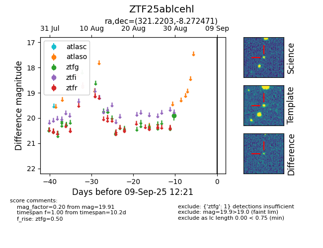

FINK: ZTF25ablcehl
Lasair: ZTF25ablcehl
ALeRCE: ZTF25ablcehl
ZTF25ablcehl (ztf,fink)
equatorial (ra, dec) = (321.2203,-8.27247)
galactic (l, b) = (44.0145,-37.74855)

last ztfg=19.91
1 ztfg detections